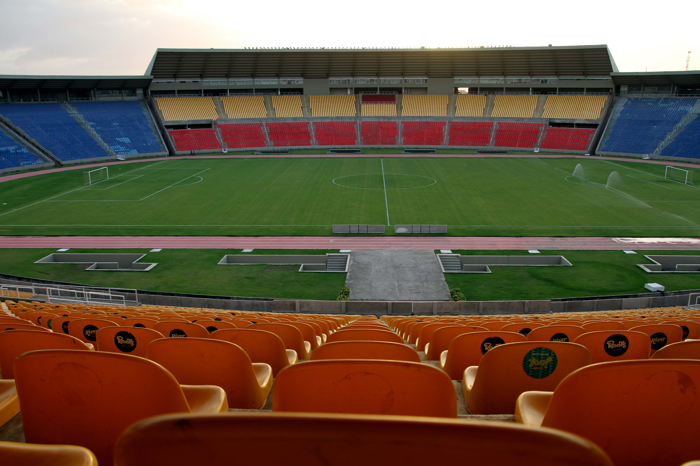

Fundado em 25 de março de 1923, o Sampaio Corrêa Futebol Clube é um dos clubes mais tradicionais do estado do Maranhão. O nome do clube é uma homenagem ao hidroavião Sampaio Corrêa II, que fez uma escala em São Luís durante uma viagem internacional.
Conhecido como "Bolívia Querida", o Sampaio se destaca por suas cores vibrantes (verde, amarelo e vermelho) e por ser uma potência no futebol nordestino. Ao longo dos anos, o clube conquistou respeito nacional com boas campanhas nas competições estaduais, regionais e nacionais.
O Sampaio Corrêa manda seus jogos no Estádio Castelão, localizado em São Luís, Maranhão. O estádio tem capacidade para mais de 40 mil torcedores e é considerado um dos maiores da região Norte-Nordeste do Brasil.
